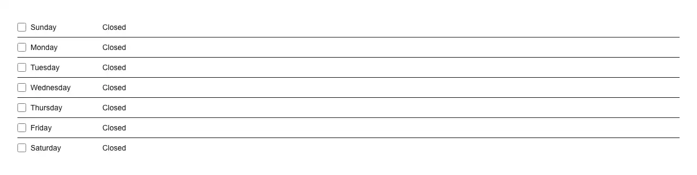

A week of opening hours in one editor: seven rows, each a switch plus an opening and a closing time, handing back a plain object keyed by weekday. Reach for it wherever a form asks *when in the week* rather than when on the clock — store, shop and restaurant opening hours; a support desk’s staffed window; delivery, pickup and collection slots; a shift roster or rota template; a staff member’s bookable availability; clinic, gym, salon, library and office hours; per-day quiet hours or do-not-disturb; and the days and times a scheduled job, digest or backup is allowed to run. It settles the three rules that hand-rolled versions get wrong. **A closed day is `null`, never `00:00`–`00:00`** — mix those two and “closed on Sunday” becomes indistinguishable from “open around the clock on Sunday”, the one mistake in this domain that reaches customers. **A closing time earlier than the opening time is the night, not a typo** — 22:00–02:00 is the bar that shuts at two, measured across midnight as 4h instead of being flagged invalid. **Equal opening and closing times mean the whole day**, so “open 24 hours” stays expressible without inventing a third state. Each row says in words which of the three it read, as you type. The week is ordered by data, not by hand: Sunday first in en-US and ja-JP, Monday in de-DE and fr-FR, Saturday in ar-EG, taken from `Intl.Locale`’s week info, with the day names from `Intl.DateTimeFormat` — or pin it yourself with `weekStartsOn`. The fourteen time fields are this registry’s `time-input`, so each one follows the reader’s clock (12- or 24-hour, the AM/PM wording, the segment order) and is typed with the keyboard rather than picked from a dropdown. “Apply to all” copies one day across the week; a day switched off and back on returns the hours that were typed instead of a default; `incompleteDays(value)` lists the days that are open but only half filled in, which is what to check before saving. With `name` set, a hidden input carries the week as JSON, so `null` survives a native form post — which no flat field encoding manages. Common asks it answers: “opening hours input”, “business hours picker”, “store hours editor”, “hours of operation form”, “weekly schedule input”, “day of week time picker”, “operating hours component”, “working hours editor”, “availability editor”, “weekly availability picker”, “shift schedule input”, “rota editor”, “open closed per day”, “per-day time ranges”, “overnight hours input”, “quiet hours per day”, “office hours editor”, “restaurant hours input”, “shadcn opening hours”, “shadcn business hours”, “react opening hours picker”, “react business hours component”, “business hours without a library”. shadcn/ui has no surface for this: its `calendar` answers a date on a month grid, `item` and `field` are layout kits for assembling a row yourself, and fetching the source of all 63 items in its registry and grepping them for the clock — `type="time"`, `hourCycle`, `hour12`, `dayPeriod`, `toLocaleTimeString`, `hour`, `minute` — returns nothing at all. Distinct from this registry’s `time-input`, which is the single field this one places fourteen of, and from `cron-expression`, which reads a cron string and explains when it fires rather than letting a person edit a week by hand. One span per day: a day with a midday break is two spans, and that is deliberately out of scope.

Rendered on the shadcn default neutral palette with harness-generated props.
pnpm dlx shadcn@4.21.0 add @pulld/weekly-hours
| licence | POINTER |
|---|---|
| primitive base | none |
| type | registry:ui |
| files | src/components/ui/weekly-hours.tsx |
| npm deps pulled | none beyond the pre-installed peer set |
| registry deps | https://pulld.pages.dev/r/time-input.json |
| semantic / palette / hex | 11 / 0 / 0 |
| writes shared ui/ | yes — can overwrite the project’s own primitives |